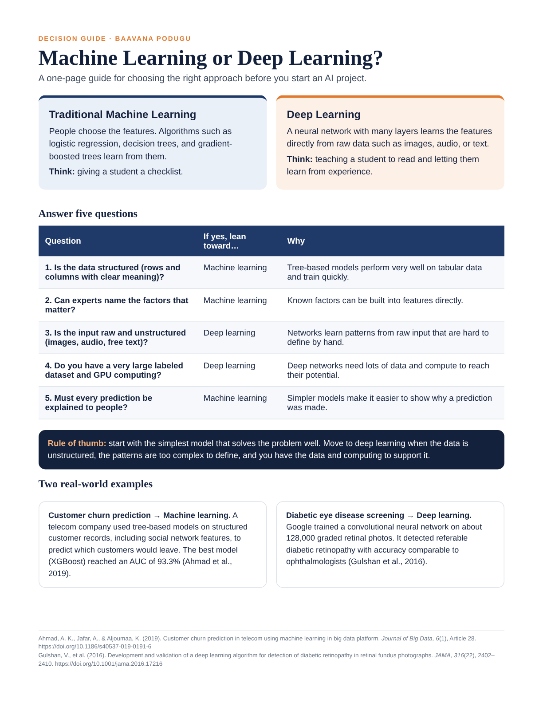
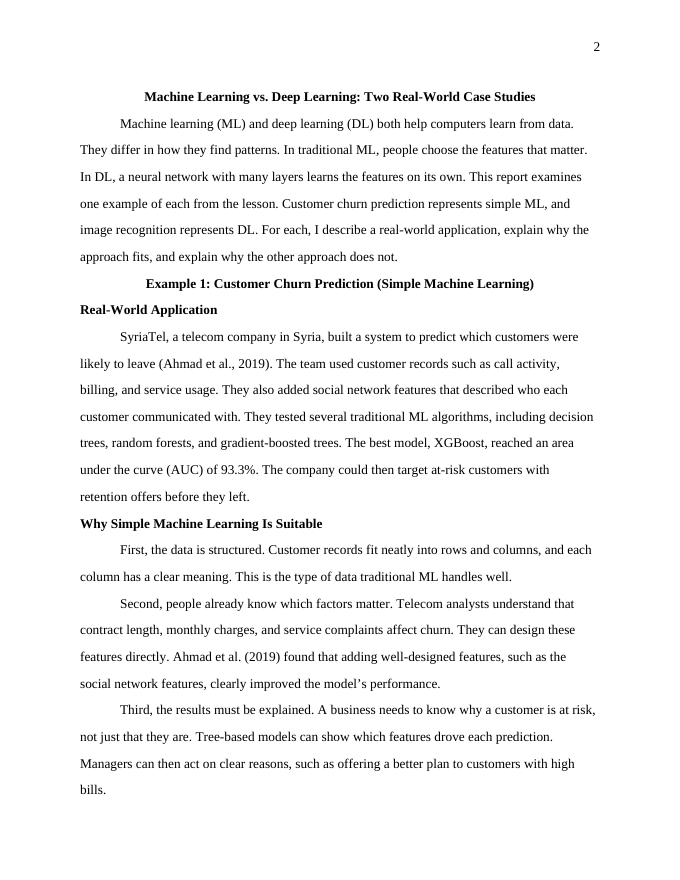

Description
This artifact has two parts:
- A one-page decision guide with five questions that point a team toward traditional machine learning or deep learning, a rule of thumb, and two real examples.
- A full analysis report that compares the two approaches using published case studies, explaining why each approach fits its problem and why the other one does not.
Objective
I created this artifact to learn how to tell machine learning and deep learning apart in practice, not just in definitions. My goal was to be able to look at a business problem and recommend the right approach with clear reasons. I also wanted to turn that analysis into a practical tool for people who are planning AI projects.
Process
- Selected two examples. From the course lesson, I chose customer churn prediction as a traditional machine learning example and image recognition with a convolutional neural network (CNN) as a deep learning example.
- Found real-world applications. I matched each example to a peer-reviewed study: a telecom company’s churn prediction system (Ahmad et al., 2019) and Google’s deep learning model for detecting diabetic eye disease in retinal photos (Gulshan et al., 2016).
- Analyzed suitability. For each case, I explained why its approach fits the problem and why the other approach would not, looking at data type, feature design, data and computing needs, and explainability.
- Verified the facts. I checked the key figures against the published studies and revised one claim that went further than the source supported.
- Turned the analysis into a tool. I condensed the findings into five decision questions and a rule of thumb, designed as a one-page guide that a team can use at the start of a project.
Key Findings
Customer churn → Machine learning
The data is structured, analysts already know which factors drive churn, and managers need to understand why a customer is at risk. Tree-based models handle all three well. In the telecom study, adding well-designed social network features improved results, and XGBoost reached an AUC of 93.3% (Ahmad et al., 2019). Deep learning would add cost and complexity without a clear gain, and it would be harder to explain.
Retinal images → Deep learning
The input is raw pixels, and the signs of disease are too subtle to describe as exact rules. A CNN trained on about 128,000 graded retinal photos detected referable diabetic retinopathy with accuracy comparable to ophthalmologists (Gulshan et al., 2016). Traditional machine learning would depend on hand-measured features that are slow to create and miss subtle patterns.
The Deliverables


Tools and Technologies Used
- Machine learning concepts: feature engineering, tree-based models (decision trees, random forests, XGBoost), and evaluation with AUC
- Deep learning concepts: convolutional neural networks (CNNs) for image recognition
- Research: peer-reviewed journal articles accessed through their DOIs
- Generative AI assistance: Claude (Anthropic) to help identify case studies, organize the analysis, and draft and design the guide
- Microsoft Word and HTML/CSS: the APA-formatted report and the one-page guide
Value Proposition
Unique Value
This guide helps project leads, product managers, and developers choose between traditional machine learning and deep learning in minutes, before they commit time and budget. Five yes-or-no questions point to the right starting approach, and two real case studies show what each choice looks like in practice. It replaces a vague debate with a clear, repeatable check.
Relevance
Many teams assume the most advanced model is the best one. In practice, deep learning needs much more data, computing power, and effort to explain, and it often adds little on structured business data. Choosing the simplest approach that solves the problem saves cost and makes results easier to trust. This guide helps teams make that choice deliberately.
References
Ahmad, A. K., Jafar, A., & Aljoumaa, K. (2019). Customer churn prediction in telecom using machine learning in big data platform. Journal of Big Data, 6(1), Article 28. https://doi.org/10.1186/s40537-019-0191-6
Gulshan, V., Peng, L., Coram, M., Stumpe, M. C., Wu, D., Narayanaswamy, A., Venugopalan, S., Widner, K., Madams, T., Cuadros, J., Kim, R., Raman, R., Nelson, P. C., Mega, J. L., & Webster, D. R. (2016). Development and validation of a deep learning algorithm for detection of diabetic retinopathy in retinal fundus photographs. JAMA, 316(22), 2402–2410. https://doi.org/10.1001/jama.2016.17216